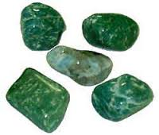

Nascidos das Cinzas
De Bruxos para Bruxos
Seções Especiais: Pedras - Pesquisa por Nome
Ω A Ω
Ágata Pedra de diversas cores, utilizada principalmente para coragem, força e longevidade.
Água Marinha Pedra de coloração azul-claro, utilizada para paz e sensitividade, principalmente.
Alexandrita Pedra rara e cara, utilizada para sorte e amor. Encontrada em algumas poucas cores (imagem da forma bruta).
Alúmen Pedra branca, utilizada pelos Egípcios e Africanos como fonte de proteção e afastamento do mal.
Amazonita Pedra esverdeada, também chamada Pedra das Amazonas, é utilizada para atrair sorte e dinheiro, além de sucesso nos planos.
Âmbar Espécie de resina amarela, utilizada especialmente para sorte, cura, beleza e amor.
Ametista Pedra lilás, utilizada contra furto, para proteção, cura, sensitividade, sonhos, amor, paz, alcoolismo, etc.
Amianto Seu uso não é recomendado, por ser tóxico sob certas circunstâncias, mas afasta o mau-olhado e ataques psíquicos, intencionais ou acidentais.
Aventurina Semelhante à amazonita, é utilizada para atrair sorte, visões, poderes mentais. É muito comum ser usada como amuleto por jogadores em jogos de azar.
Azeviche Pedra negra, utilizada para sorte, saúde, divinação e para afastar pesadelos. Por ser uma pedra que absorve energias, é utilizada também para proteção.
Azurita Coloração mista. Utilizada para estimular os sonhos, obter sensitividade e para fins de cura. Além disso, é muito utilizada para divinação (previsão do futuro).
Ω B Ω